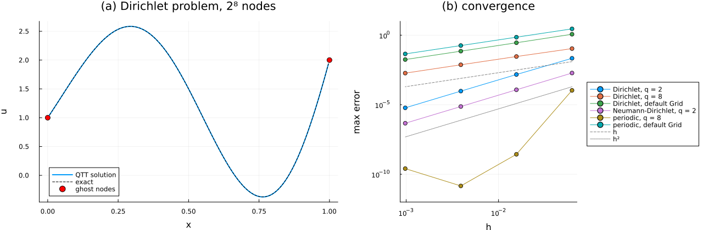

The Poisson equation in one dimension
In this tutorial we solve the boundary-value problem
\[-u''(x) = f(x), \qquad x \in [0, 1],\]
in the QTT format, with Dirichlet, Neumann and periodic boundary conditions, and measure the error against the exact solution as the grid is refined. The guiding idea is that a finite-difference operator is the interior central stencil, completed by values at nodes that are not stored (ghost nodes), and that a boundary condition is a rule that gives those ghost values. When the rule involves the unknowns, it changes the rows of the operator next to the boundary; when it involves only data, it adds a known vector to the right-hand side. The interior stencil is a Toeplitz matrix, whose QTT operator (MPO) has a bond dimension independent of the number of nodes (Kazeev & Khoromskij, 2012), and the closures only modify a few rows, so the whole operator stays cheap. Where the ghost nodes sit relative to the stored nodes then decides which grid represents the continuous problem.
We proceed as follows. We first look at the stencil and at its Dirichlet closure on a grid of 8 nodes, which shows where the boundary value sits. We then assemble and solve a Dirichlet problem with ResidualALS, and check the solution against a dense solve of the same system. Finally, we add a Neumann side, which needs a symmetrization, and a periodic axis, and compare the convergence of all of them on grids of $2^4$ to $2^{10}$ nodes.
using DifferenTT
using ITensors, ITensorMPS
using TensorCrossInterpolation: crossinterpolate2, optfirstpivot
using LinearAlgebra
using Plots
using Printf
using StableRNGs
rng = StableRNG(2024);The dense checks of this tutorial contract MPOs of up to 10 sites into matrices, i.e. ITensors with 20 indices, for which ITensors warns by default; we raise the threshold.
ITensors.set_warn_order(24);The stencil and its Dirichlet closure
Every operator of the library is built from the central coefficients $c_k$ of derivative_coefficients, which approximate $h^2 u''(x_i) \approx \sum_{|k| \le q/2} c_k u_{i+k}$ to order $q$ in the spacing $h$; the library provides the stencil orders $q = 2$ and $q = 8$. For $q = 2$ these are the familiar $(1, -2, 1)$.
c2 = DifferenTT.derivative_coefficients(2; stencil_order=2)
c8 = DifferenTT.derivative_coefficients(2; stencil_order=8)
[c2[k] for k in -1:1], [round(c8[k]; digits=4) for k in -4:4]([1.0, -2.0, 1.0], [-0.0018, 0.0254, -0.2, 1.6, -2.8472, 1.6, -0.2, 0.0254, -0.0018])The function onedim_differential_operator places these coefficients on the band of a Toeplitz matrix and closes its first and last $q/2$ rows with the boundary conditions of the axis. It is shown here, and below, only to expose the construction; the operators of a field are built by symmetrized_laplacian and kronecker_laplacian. For a Dirichlet side the closure is a truncation: the stencil entries that fall outside the grid are dropped, which amounts to setting the $q/2$ ghost values beyond the last stored node to zero. A QTT operator needs at least 4 sites, so to print the closure on 8 nodes we use a TTArchitecture with one site of 8 nodes, for which the same function returns the dense matrix, with the same closure, directly.
dirichlet = BoundaryCond1d(DirichletBC(1.0), DirichletBC(2.0))
arch8 = TTArchitecture((8,))
Int.(DifferenTT.onedim_differential_operator(2, arch8, 1, dirichlet; stencil_order=2))8×8 Matrix{Int64}:
-2 1 0 0 0 0 0 0
1 -2 1 0 0 0 0 0
0 1 -2 1 0 0 0 0
0 0 1 -2 1 0 0 0
0 0 0 1 -2 1 0 0
0 0 0 0 1 -2 1 0
0 0 0 0 0 1 -2 1
0 0 0 0 0 0 1 -2The first row reads $u_0 - 2u_1 + u_2$ with $u_0$ dropped, so the ghost node $u_0$ sits one spacing before the first stored node, and this is where the Dirichlet value belongs. Nonzero Dirichlet data are therefore not imposed by the operator: they are added to the right-hand side as a lift, which we build below. Before that, we check that the bond dimension of the QTT operator does not grow with the grid, which is what makes fine grids affordable.
[
maxlinkdim(DifferenTT.onedim_differential_operator(2, QTTArchitecture((n,)), 1, dirichlet; stencil_order=8)) for
n in 4:2:12
]5-element Vector{Int64}:
9
9
9
9
9Which grid: the position of the ghost nodes
Since the Dirichlet value sits on the first ghost node, the physical boundary must coincide with that node. The default Grid stores a node at each end of the box, $h = L/(n - 1)$, so with this closure its ghost nodes sit at $-h$ and $L + h$, and it would solve a problem on an interval wider than $[0, L]$ by $2h$. The grid whose ghost nodes sit on the boundary is that of interior_grid, which stores the $n$ nodes $h, 2h, \dots, nh$ with
\[h = \frac{L}{n - 1 + g},\]
where $g$ is the number of ghost sides of the axis, here $g = 2$. Its coordinates are shifted, since grid coordinate 0 is the physical coordinate $h$, so we evaluate functions of the physical coordinate at $x_\text{grid} + h$. We use $2^8$ nodes, and the exact solution
\[\begin{aligned} u(x) &= 1 + x + e^{x} \sin(2 \pi x), \\ f(x) = -u''(x) &= -e^{x} \left[(1 - 4\pi^2) \sin(2\pi x) + 4\pi \cos(2\pi x)\right], \end{aligned}\]
where $u(0) = 1$ and $u(1) = 2$ are the Dirichlet values.
u_dirichlet(x) = 1 + x + exp(x) * sin(2π * x)
f_dirichlet(x) = -exp(x) * ((1 - 4π^2) * sin(2π * x) + 4π * cos(2π * x))
arch = QTTArchitecture((8,))
sites = siteinds(arch)
grid = interior_grid(arch, (1.0,))
h = grid.dx[1]
h, 1 / (2^8 + 1)(0.0038910505836575876, 0.0038910505836575876)The right-hand side is built by cross interpolation, as in the tutorial on the QTT format, so that the dense vector of $f$ is never formed.
function qtt(func, arch, grid, sites; tolerance=1e-12)
pivot = optfirstpivot(Float64, func, grid, arch; rng)
tci, _, _ = crossinterpolate2(Float64, func, grid, arch; initialpivots=[pivot], tolerance)
mps = MPS(tci)
replace_siteinds!(mps, sites)
return mps
end
f_mps = qtt(x -> f_dirichlet(x[1] + h), arch, grid, sites);Assembling the Dirichlet system
A ScalarField collects the architecture, the site indices and the boundary conditions from which its operators are built. symmetrized_laplacian returns the Laplacian with the closures of every axis, scaled by $1/h^2$; with no Neumann side it equals kronecker_laplacian. Since $-\Delta$ is SPD with these closures, we solve with $A = -\Delta$.
bcs = BoundaryConditions(dirichlet)
field = ScalarField(sites, arch, bcs)
q = 2
A = -1.0 * symmetrized_laplacian(field, grid; stencil_order=q)
maxlinkdim(A)11The lift restores the stencil coefficients that the truncation dropped, applied to ghost nodes that hold the Dirichlet values. scalar_dirichlet_correction returns an operator $C$ such that $\Delta_\text{full} \mathbf{u} = \Delta \mathbf{u} + C \mathbf{1}$, where $\Delta_\text{full}$ is the stencil applied to the vector extended with the ghost values and $\mathbf{1}$ is the all-ones MPS. The discrete problem $-\Delta_\text{full} \mathbf{u} = \mathbf{f}$ therefore becomes
\[A \mathbf{u} = \mathbf{b}, \qquad \mathbf{b} = \mathbf{f} + C \mathbf{1}.\]
C = scalar_dirichlet_correction(field, grid, 2; stencil_order=q)
lift = apply(C, ones_mps(sites, 1))8-element ITensorMPS.MPS:
((dim=2|id=539|"Link,l=1"), (dim=2|id=512|"Site,n=1"))
((dim=2|id=443|"Site,n=2"), (dim=2|id=843|"Link,l=2"), (dim=2|id=539|"Link,l=1"))
((dim=2|id=342|"Site,n=3"), (dim=2|id=270|"Link,l=3"), (dim=2|id=843|"Link,l=2"))
((dim=2|id=452|"Site,n=4"), (dim=2|id=793|"Link,l=4"), (dim=2|id=270|"Link,l=3"))
((dim=2|id=648|"Site,n=5"), (dim=2|id=894|"Link,l=5"), (dim=2|id=793|"Link,l=4"))
((dim=2|id=297|"Site,n=6"), (dim=2|id=699|"Link,l=6"), (dim=2|id=894|"Link,l=5"))
((dim=2|id=197|"Site,n=7"), (dim=2|id=169|"Link,l=7"), (dim=2|id=699|"Link,l=6"))
((dim=2|id=757|"Site,n=8"), (dim=2|id=169|"Link,l=7"))We check the lift densely, for $q = 2$ and $q = 8$, against its definition: every stencil entry $c_k/h^2$ of row $i$ whose node $i + k$ falls outside the grid, multiplied by the value of the side it falls on. Note that for $q = 8$ all four ghost nodes of a side hold the same value.
function lift_by_hand(n, h, q, left, right)
c = DifferenTT.derivative_coefficients(2; stencil_order=q)
expected = zeros(n)
for i in 1:n, k in (-q÷2):(q÷2)
j = i + k
j < 1 && (expected[i] += c[k] * left / h^2)
j > n && (expected[i] += c[k] * right / h^2)
end
return expected
end
lift_errors = map((2, 8)) do order
C_q = scalar_dirichlet_correction(field, grid, 2; stencil_order=order)
lift_q = contract_mps(apply(C_q, ones_mps(sites, 1)))
return maximum(abs.(lift_q - lift_by_hand(2^8, h, order, 1.0, 2.0)))
end(0.0, 6.984919309616089e-10)Summing two MPS with ITensors' default algorithm truncates the result, with a relative error of order $\sqrt{\epsilon} \approx 10^{-8}$, which is not negligible next to the $1/h^2$ entries of the lift. We therefore sum with alg = "directsum", which is exact and adds the bond dimensions.
b = +(f_mps, lift; alg="directsum")
maxlinkdim(b)4Solving with ResidualALS
ResidualALS is the two-site ALS (MALS) of Oseledets & Dolgov (2012), with a truncation that chooses the rank of each new pair of cores by its effect on the local residual, and the solver of the experiments of the paper (Torrente et al., Factorized approximate inverse preconditioners in the tensor train format, Sec. 5). We stop the sweeps once the global relative residual is below $10^{-10}$ (ResidualObserver), and solve the local problems, which are SPD since $A$ is, by CG (ishermitian and isposdef). The sweeping cutoff is 0, so the rank is chosen by the residual alone.
solver = ResidualALS(;
sweep_kwargs=SweepingArgs(; nsweeps=20, maxdim=32, cutoff=0.0, (observer!)=ResidualObserver(; rtol=1e-10)),
updater_kwargs=LocalUpdaterArgs(; ishermitian=true, isposdef=true, rtol=1e-11),
residual_tol=1e-11,
)
x = linearsolve(solver, A, b, nothing)
maxlinkdim(x)4The grid has only $2^8$ nodes, so we can separate the two sources of error. The solver error compares the MPS with the dense solution of the same discrete system, built from contract_mpo and contract_mps; the discretization error compares the dense solution with the exact $u$ at the nodes.
nodes = grid.points[1] .+ h # physical coordinates of the stored nodes
x_dense = contract_mpo(A) \ contract_mps(b)
u_exact = u_dirichlet.(nodes)
solver_error = maximum(abs.(contract_mps(x) - x_dense))
discretization_error = maximum(abs.(x_dense - u_exact))
@printf("solver error %.1e, discretization error %.1e\n", solver_error, discretization_error)solver error 2.0e-11, discretization error 9.5e-05The solver error is several orders of magnitude below the discretization error, so the error of the MPS against the exact solution measures the discretization, which is what we study in the last section.
A Neumann side and its symmetrization
We now impose $u'(0) = 0$ on the left and $u(1) = 0$ on the right, with the exact solution
\[u(x) = (1 + x^2) \cos(a x), \qquad a = \pi / 2,\]
for which $f = -u'' = -\left[(2 - a^2 (1 + x^2)) \cos(a x) - 4 a x \sin(a x)\right]$. A NeumannBC places the boundary on the stored node $u_1$ and mirrors the ghost values about it, $u_{1-k} = u_{1+k}$, which involves the unknowns, so this time the closure changes the operator. Eliminating the ghost value of the first row for $q = 2$ gives $2 u_2 - 2 u_1$, as the dense operator on 8 nodes shows.
neumann_dirichlet = BoundaryCond1d(NeumannBC(0.0), DirichletBC(0.0))
Int.(DifferenTT.onedim_differential_operator(2, arch8, 1, neumann_dirichlet; stencil_order=2))8×8 Matrix{Int64}:
-2 2 0 0 0 0 0 0
1 -2 1 0 0 0 0 0
0 1 -2 1 0 0 0 0
0 0 1 -2 1 0 0 0
0 0 0 1 -2 1 0 0
0 0 0 0 1 -2 1 0
0 0 0 0 0 1 -2 1
0 0 0 0 0 0 1 -2The first row counts the coupling to $u_2$ twice, so the operator is not symmetric, and CG cannot be applied to it. Multiplying the whole system by the diagonal weight $W$ of neumann_weight_mpo, which halves the Neumann boundary row, restores the symmetry without changing the solution: this is the half cell of a finite-volume discretization. symmetrized_laplacian returns $W \Delta$, and symmetrize_rhs gives $W \mathbf{b}$. The grid has one ghost side, the Dirichlet side, so its spacing is $h = 1/n$ and its stored nodes start at the physical 0.
a = π / 2
u_neumann(x) = (1 + x^2) * cos(a * x)
f_neumann(x) = -((2 - a^2 * (1 + x^2)) * cos(a * x) - 4a * x * sin(a * x))
field_n = ScalarField(sites, arch, BoundaryConditions(neumann_dirichlet))
grid_n = interior_grid(arch, (1.0,), (1,))
A_n = -1.0 * symmetrized_laplacian(field_n, grid_n; stencil_order=2)
A_n_dense = contract_mpo(A_n)
A_unweighted = -contract_mpo(kronecker_laplacian(field_n, grid_n; stencil_order=2))
norm(A_unweighted - A_unweighted') / norm(A_unweighted), norm(A_n_dense - A_n_dense') / norm(A_n_dense)(0.036072651335404216, 1.1249468001559162e-14)The weighted operator is symmetric up to rounding, while the unweighted one is not. We solve the weighted system and check the solution densely, as before.
b_n = symmetrize_rhs(field_n, qtt(x -> f_neumann(x[1]), arch, grid_n, sites))
x_n = linearsolve(solver, A_n, b_n, nothing)
x_n_dense = A_n_dense \ contract_mps(b_n)
maximum(abs.(contract_mps(x_n) - x_n_dense)), maximum(abs.(x_n_dense - u_neumann.(grid_n.points[1])))(1.0354717083771448e-11, 7.395150331879208e-6)A periodic axis
A PeriodicBC takes the ghost values from the stored nodes at the other end, so the stencil wraps and the operator becomes a circulant, with no lift and no weight. The periodic Laplacian is singular, since constants are in its null space, so we solve the shifted problem $-u'' + u = f$ instead, with the exact solution $u(x) = e^{\sin(2 \pi x)}$. The grid must not store the node at $L = 1$, which is the image of the node at 0: with the periodic flag, the $n$ stored nodes are spaced by $h = 1/n$ and the wrapped stencil has period 1. Without it, the default grid keeps both end nodes and the period becomes $1 + h$. We compare the two below. The flag of each axis follows from the boundary conditions through periodic_axes.
u_periodic(x) = exp(sin(2π * x))
f_periodic(x) = (1 - 4π^2 * cos(2π * x)^2 + 4π^2 * sin(2π * x)) * u_periodic(x)
periodic = BoundaryConditions(BoundaryCond1d(PeriodicBC(), PeriodicBC()))
periodic_axes(periodic)(true,)Convergence under grid refinement
We now repeat the solves on grids of $2^4$ to $2^{10}$ nodes, with $q = 2$ and $q = 8$, for the three problems above and for the two grids that misplace the boundary: the default Grid with Dirichlet sides, and the default Grid on the periodic axis. The function below assembles each system exactly as in the previous sections, and returns the largest error at the nodes, together with the solver error against the dense solve.
function poisson_error(problem, nbits, order)
arch = QTTArchitecture((nbits,))
sites = siteinds(arch)
if problem in (:dirichlet, :dirichlet_default_grid)
conditions = BoundaryConditions(dirichlet)
grid = problem == :dirichlet ? interior_grid(arch, (1.0,)) : Grid(arch, 1.0)
shift = problem == :dirichlet ? grid.dx[1] : 0.0
u, f = u_dirichlet, f_dirichlet
elseif problem == :neumann
conditions = BoundaryConditions(neumann_dirichlet)
grid, shift = interior_grid(arch, (1.0,), (1,)), 0.0
u, f = u_neumann, f_neumann
else
conditions = periodic
flags = problem == :periodic ? periodic_axes(conditions)[1] : false
grid, shift = Grid(arch, 1.0; periodic=flags), 0.0
u, f = u_periodic, f_periodic
end
field = ScalarField(sites, arch, conditions)
rhs = qtt(x -> f(x[1] + shift), arch, grid, sites)
if conditions === periodic
op = +(-1.0 * kronecker_laplacian(field, grid; stencil_order=order), identity_mpo(sites); alg="directsum")
else
op = -1.0 * symmetrized_laplacian(field, grid; stencil_order=order)
correction = scalar_dirichlet_correction(field, grid, 2; stencil_order=order)
if !isnothing(correction)
rhs = +(rhs, apply(correction, ones_mps(sites, 1)); alg="directsum")
end
rhs = symmetrize_rhs(field, rhs)
end
solution = contract_mps(linearsolve(solver, op, rhs, nothing))
dense = contract_mpo(op) \ contract_mps(rhs)
return maximum(abs.(solution - u.(grid.points[1] .+ shift))), maximum(abs.(solution - dense))
end
problems = [
(:dirichlet, 2) => "Dirichlet, q = 2",
(:dirichlet, 8) => "Dirichlet, q = 8",
(:dirichlet_default_grid, 2) => "Dirichlet, default Grid",
(:neumann, 2) => "Neumann-Dirichlet, q = 2",
(:periodic, 8) => "periodic, q = 8",
(:periodic_default_grid, 8) => "periodic, default Grid",
]
bits = 4:2:10
errors = Dict(key => [poisson_error(key[1], n, key[2]) for n in bits] for (key, _) in problems)
for (key, label) in problems
@printf(
"%-26s errors %s, largest solver error %.1e\n",
label,
join((@sprintf("%.1e", e) for (e, _) in errors[key]), " "),
maximum(last, errors[key])
)
endDirichlet, q = 2 errors 2.2e-02 1.5e-03 9.5e-05 6.0e-06, largest solver error 1.9e-10
Dirichlet, q = 8 errors 1.1e-01 2.9e-02 7.4e-03 1.9e-03, largest solver error 2.5e-10
Dirichlet, default Grid errors 1.2e+00 2.8e-01 7.1e-02 1.8e-02, largest solver error 1.2e-10
Neumann-Dirichlet, q = 2 errors 1.9e-03 1.2e-04 7.4e-06 4.6e-07, largest solver error 1.1e-10
periodic, q = 8 errors 1.1e-04 2.7e-09 1.4e-11 2.5e-10, largest solver error 1.5e-10
periodic, default Grid errors 2.9e+00 7.2e-01 1.8e-01 4.5e-02, largest solver error 2.8e-11The solver errors stay far below the discretization errors, so the table measures the discretizations. The error of the Dirichlet problem with $q = 2$ decreases by a factor of 16 every two bits, i.e. as $h^2$, and so does the error of the Neumann–Dirichlet problem, whose mirrored closure and half-cell weight keep second order. The periodic problem with $q = 8$ converges much faster, as its stencil is of order 8 everywhere, until it reaches the accuracy of the solve.
The other three rows are first order, i.e. they decrease by a factor of 4 every two bits, and for two different reasons. On the default Grid the boundary is misplaced by one spacing, at both Dirichlet sides or in the period, so the error is $\mathcal{O}(h)$ whatever the stencil order. The Dirichlet problem with $q = 8$ is on the right grid, but its closure fills all four ghost nodes of a side with the boundary value, which is consistent only to first order where the solution has a nonzero slope at the boundary. This is a known limitation of v0.1 (see DirichletBC and issue #51), and the reason we use $q = 2$ for Dirichlet problems in this tutorial.
Summary
The figure shows (a) the Dirichlet solution on $2^8$ nodes, with the two ghost nodes that carry the boundary values, and (b) the errors of the table against the spacing, with the slopes of first and second order.
panel_a = plot(
nodes,
contract_mps(x);
label="QTT solution",
xlabel="x",
ylabel="u",
linewidth=2,
title="(a) Dirichlet problem, 2⁸ nodes",
)
plot!(panel_a, 0:0.01:1, u_dirichlet; label="exact", linestyle=:dash, color=:black)
scatter!(panel_a, [0.0, 1.0], [1.0, 2.0]; label="ghost nodes", color=:red, markersize=5)
spacings = 1 ./ 2.0 .^ bits
panel_b = plot(;
xscale=:log10,
yscale=:log10,
xlabel="h",
ylabel="max error",
legend=:outerright,
title="(b) convergence",
ylims=(1e-12, 10),
)
for (key, label) in problems
plot!(panel_b, spacings, first.(errors[key]); label, marker=:circle)
end
plot!(panel_b, spacings, 0.2 .* spacings; label="h", color=:gray, linestyle=:dash)
plot!(panel_b, spacings, 0.05 .* spacings .^ 2; label="h²", color=:gray, linestyle=:dot)
plot(panel_a, panel_b; layout=(1, 2), size=(1300, 420), margin=5Plots.mm)